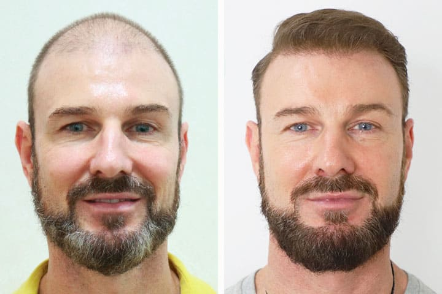
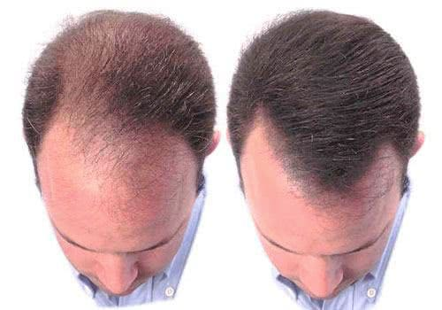
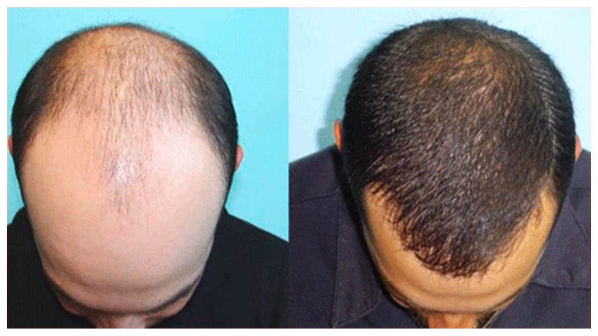
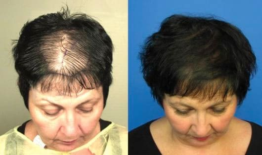
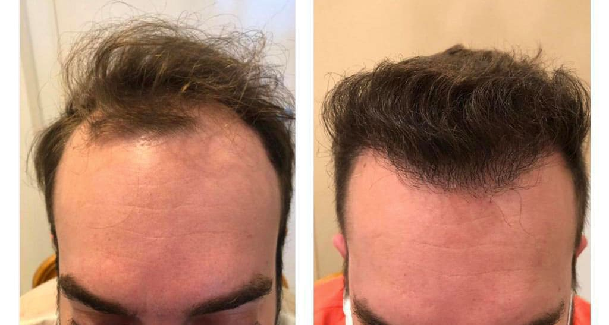
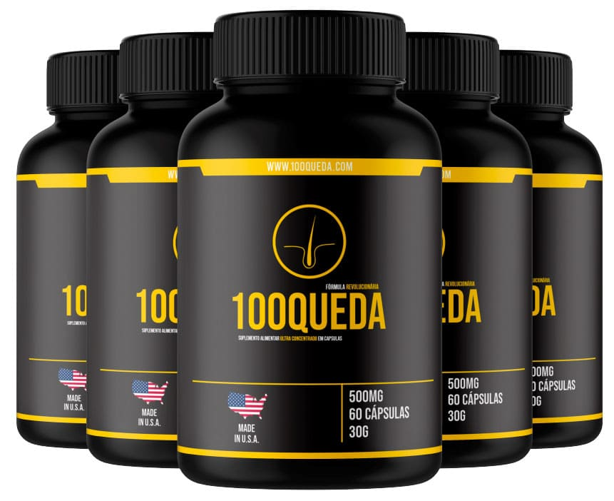

Estima-se que a queda capilar e a Calvície afetam mais de 2.5 bilhões de pessoas em todo o mundo, sendo que mais de 1.9 bilhões são homens. No Brasil, cerca de 65% dos homens têm alguma queixa relacionada ao Cabelo, seja por conta das quedas frequentes ou por após os 30, não conseguirem retomar a aparência jovial e vigorosa os cabelos trazem a imagem de um homem.
No mercado brasileiro existem vários tratamentos que prometem solucionar o problema, desde tomar remédios como Finasterida ou Minoxidil tradicional, usar perucas, passar cremes, além de também poder recorrer a procedimentos estéticos, como eletroestimulação e implante ou transplante de cabelo. Nenhum deles, entretanto, têm a mesma comprovação científica e a mesma garantia de eficácia. Até 2021 esse estudo era puramente internacional e o tratamento ainda não havia sido disponibilizado ao público Brasileiro.
Um tratamento americano recém desenvolvido promete curar esse problema, durante testes de laboratório, os cientistas identificaram que uma medicação natural, usada para tratar osteoporose teve um efeito forte sobre os folículos pilosos, estimulando-os a crescer. Ela contém um poderoso componente capaz de inativar uma proteína que atua como um freio no crescimento do cabelo e seria uma das responsáveis pela calvície. Comprovou-se que a proteína pode curar a calvície sem nenhum efeito colateral. Com garantias e comprovações cientificas de 99% de eficácia no FDA, Anvisa Americana. Eles a chamaram de Trinoxidil Americano®
Centro de pesquisas do FDA, agência federal do Departamento de Saúde e Serviços Humanos dos Estados Unidos. (Foto: Reprodução/Murilo Serra G1)O Trinoxidil Americano promove o o fim da queda de cabelo atual e ativa o fortalecimento do couro cabeludo a nivel celular, por ser um componente natural, ele é muito bem aceito pelo nosso organismo.
Combinado a extratos naturais, o cabelo fica mais saudavél graças a ação de dentro para fora que ele promove, trazendo de volta aquele aspecto natural e revitalizado aos novos folículos capilares que estão nascendo e aos que já nasceram. Por ser encontrado em cápsulas as dosagens são mais concentradas.
Estudos feitos em laboratórios americanos, comprovam que o Tratamento com o Trinoxidil Americano pode ser feito em qualquer época do ano, por não alterar a epiderme. “O efeito do tratamento é surpreendente. E, a partir de 90 dias, consegue-se perceber o efeito da cura da queda capilar e nascimento de novos folículos do zero.
Abaixo mostraremos resultados de pacientes que permitiram ao G1 acesso aos resultados de seu tratamento.
 Tratamento com Trinoxidil Americano, resultado após 7 meses de uso (Foto: Reprodução FDA/Murilo Serra G1)  Tratamento com Trinoxidil Americano combinado a extratos naturais, resultado após 6 meses de uso (Foto: Reprodução FDA/Murilo Serra G1)Lúcio Aparecido, 35 anos, conta que foi chamado no início de 2021 pela equipe do 100QUEDA para fazer um teste sem custos por 180 dias. Ele relatou que o resultado foi muito maior do que poderia imaginar: “De uns anos pra cá o meu cabelo começou a cair muito. O maior impacto foi causado pelo stress excessivo por conta da pandemia, quando eu e minha família ficamos desempregados por um tempo. E eu já não sabia o que fazer, pois havia tentado todo tipo de tratamento e produto. Mas nada funcionava, até que minha história chamou atenção da equipe do 100QUEDA, e eu fui convidado para fazer um Desafio por 180 dias. E tudo mudou. Eu acho que o grande diferencial do 100QUEDA é a sua fórmula, né? Eu pesquisei bastante e não encontrei nenhuma fórmula realmente eficaz nos produtos daqui.” Lúcio conseguiu acabar com as calvicíe e começou a aparentar ser 10 anos mais novo, e ainda brinca que suas amigos sempre perguntam o segredo do seu cabelo, e Lúcio brinca. “Segredo dos famosos, e eu importei dos Estados Unidos… Estava me sentindo feio com as calvicíe, tive que dar um jeito né? Eu gosto do meu rosto jovial, e por causa do meu cabelo novo (em 6 meses ele rejuvenesceu 10 anos risos).” Ele enfatiza: “É um produto com uma tecnologia fantástica. Nunca vai faltar na minha casa. Agora mais por precaução, né?”.
Ele não foi o único brasileiro convidado para fazer testes com o produto antes do início das vendas no Brasil. No site da marca existem depoimentos de pelo menos mais 5 homens, de 33 até 68 anos, que relataram suas experiências positivas com o produto.
 Lucio Aparecido, 35 anos, de Cascavel (PR), depois de 3 meses de tratamento.Trinoxidil Americano: O minoxidil é uma substância ativa que estimula o crescimento capilar, já que aumenta o calibre dos vasos sanguíneos, melhorando a circulação sanguínea no local, e prolonga a fase anágena, que é a fase de nascimento e crescimento do cabelo
Zincidone: Zincidone é um ingrediente ativo seborregulador, uma combinação de zinco e L-PCA, é o sal de zinco do ácido L-pirrolidona carboxílico. Foi desenvolvido para tratar a pele oleosa e a pele com tendência à acne, mundialmente usada no tratamento para calvície.
Vitaminas Complexo B: Acelere o crescimento dos seus fios e fortaleça sua imunidade com vitaminas naturais.
Metilsulfonilmetano: Favorece a nutrição da couro cabeludo e atua combatendo a queda capilar;
Niacina: Nutre as camadas de proteção da pele capilar (derme e epiderme e bulbo).
Segundo a marca, o produto é direcionado especialmente ao público masculino. “É necessário ter em mente que a calvicíe que ocorre nas mulheres tem causas diferentes daquela que atinge os homens. No sexo masculino o problema é quase sempre uma questão da deficiência de importantes nutrientes que compõem as 3 camadas de formação da pele. Nas mulheres o problema costuma ser causado por doenças ou estresses anormais ao organismo. O 100QUEDA foi feito para sanar essa deficiência.” destaca. Quando perguntado sobre o uso do produto por mulheres, ela respondeu: “Não é que o produto não tenha eficácia em mulheres. Ele tem. Nós temos histórias de sucesso de mulheres que utilizaram. Quando lançamos a patente, nós fizemos testes em homens e mulheres. O resultado foi muito maior nos homens. Todavia, certamente a calvicíe das mulheres era causada por doenças, diferentemente dos homens que era falta de vitaminas, que normalmente ocorre após os 30, 40 anos.” E enfatizou: “Como as mulheres no geral não se preocupam tanto com a calvicíe, as dosagens e a eficácia do produto foi desenvolvida para as homens, onde temos 99% de Eficácia nos testes feitos pelo FDA (Anvisa Americana).
Nós inclusive damos aos homens uma garantia de 90 dias pela confiança que temos no produto, resultado garantido ou dinheiro de volta.” afirma.
 100QUEDA também apresentou resultados quando usado por mulheres com alopécia, paciente pediu que sua identidade não fosse revelada.De acordo com o fabricante, o produto já é conhecido por disponibilizar garantia de 90 dias nas vendas em todo Estado Unidos e para alguns países da Europa. Com a chegada ao mercado brasileiro, o Brasil será incluído na lista de países beneficiados. Com isso, ao adquirir três potes ou mais, para iniciar o tratamento por 90 dias, o fabricante se propõe a reembolsar a cliente, caso não exista combate a Cura da Calvície num período de 90 dias desde o início do tratamento, bastando apenas seguir as regras da promoção, que estão disponibilizadas no Site Oficial. Assim nossos clientes tem risco zero, para conhecer e experimentar nosso produto. Essa é a prova máxima da confiança que temos em nossa fórmula exclusiva”, afirma o fabricante.
 Jeferson 51 anos, de Capitólio (MG), depois de 7 meses de tratamento. (Foto: Penin)A marca 100QUEDA solicitou o registro para importação e comercialização do Trinoxidil Americano® no mercado brasileiro no ínico 2021. No entanto, somente em 2022 a Anvisa deu o parecer favorável à sua comercialização em território nacional. “Estávamos em busca de novos mercados e percebemos que o Brasil é um dos únicos países em que os produtos para tratamento da Calvície são praticamente iguais, com a variações mínimas da mesma fórmula. Uma fórmula que não tem eficácia alguma.” enfatiza a Dra. Daphné Thioly-Bensoussan, renomada cientista americana que atua em Washington e é chefe das pesquisas do 100QUEDA.
“É até absurdo saber que a legislação no Brasil permite a comercialização de produtos sem que eles precisem comprovar a sua eficácia.” admite a médica. “Quando um cliente procura por um produto, ele necessita ter garantias de que aquilo que ela investiu o seu dinheiro vai realmente funcionar, sobretudo, quando se trata de uma parte do corpo importantíssima para sua autoestima, como é o seu cabelo.” ressalta.
Cientista Capilar Daphné Thioly-Bensoussan. (Foto: Anti Calvície Magazine)Segundo o fabricante, o 100QUEDA é um remédio natural e não apresenta contraindicação ou efeito colateral. Isso significa que mesmo pessoas portadoras de doenças crônicas podem fazer uso do produto.
Para resultados satisfatórios, é recomendado o uso duas vezes ao dia, num intervalo de 12 horas, sendo a pela manhã e à noite.
O preço do Tratamento do 100QUEDA varia de acordo com a quantidade de frascos adquiridos. O fabricante trabalha com descontos progressivos, ou seja, quanto mais frascos você adquirir, maior será o desconto no valor final.
No Brasil, assim como nos Estados Unidos com a pandemia, o 100QUEDA trabalhará apenas com o sistema de vendas online, onde o cliente poderá adquirir pelo site oficial e receber no conforto da sua casa. CUIDADO: A marca 100QUEDA não vende pelo Mercado Livre, OLX, ou outros sites. Certifique-se estar comprando o produto ORIGINAL, por isso, sempre adquira do Site Oficial.
Durante a produção dessa reportagem, o fabricante entrou em contato com nossa produção e ofereceu um Desconto Especial e a condição de parcelamento em até 12x no cartão de crédito para nossos leitores que estiverem interessados em experimentar o 100QUEDA.
Atenção: O desconto é válido apenas enquanto durarem os estoques, e é aplicado automaticamente ao clicar na imagem abaixo.
Os comentários são de responsabilidade exclusiva de seus autores e não representam a opinião deste site. Se achar algo que viole os termos de uso, denuncie. Leia as perguntas mais frequentes para saber o que é impróprio ou ilegal.
Esse produto mudou minha vida! Comprei a primeira vez quando visite os EUA em 2021.. Até comprei algumas vezes depois mas pra importar em dólar ficava muito caro! ainda bem que chegou aqui.. já vou olhar o site pra comprar
Eu também sempre importava e pagava caro, agora que a formulação chegou no Brasil fica muito mas fácil kk
Com 20 dias de uso eu já senti muita diferença, meu cabelo está mais firme e estou sentindo e vendo fios novos nascendo.
Amigos, não confiem em qualquer produto, há muitos produtos fakes na internet, por isso no meu consultório só recomendo o 100QUEDA, e apenas compre no site oficial do G1
Este conteúdo não recebe mais comentários